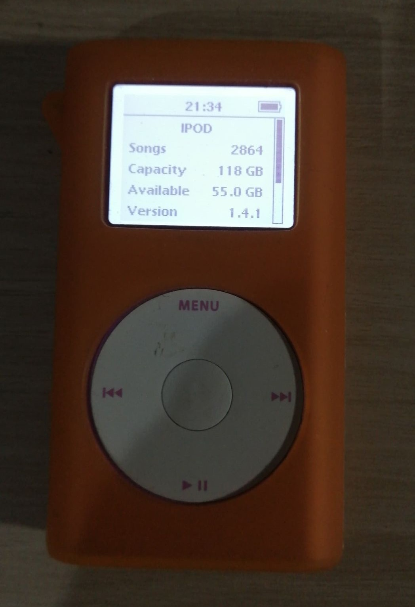

Bethany Davis
iPod Modification
What is it?
- While I've always loved audio in general, during my summer holidays in 2020, I found a few youtube channels which had been coming out
with iPod mods and got inspired. While I had opened up various iPods before, this was my first time doing it with any sort of guide, the
correct tools, and any amount of spare money.

Modified iPod Mini 2nd Gen (pink with orange case), originally sold with either 4 or 6gb mini HDDs
- Pictured above is an iPod Mini 2nd Generation. These were sold originally from early 2005, and shipped with either 4
or 6gb mini HDDs. From what I can find, they were essentially marketed as a condensed version of the original iPod- later branded "classic"-
compromising on some of the functionality, but with much of the same audio quality. It's also by far the easiest iPod to modify. The shell is a single
tube of aluminium, the clickwheel is its own assembly, the lower and upper plastic covers are extremely easy to remove, and aren't
attached to the motherboard, and it just so happens that the connector for the HDD is the same as a compact flash connector, meaning you
can easily retrofit a CF card, or adapter with something like an SD/Micro SD.
- There are more mods you can do. Previously I've run "Rockboxed" iPods - usually later gen classics, and there are a few options for
aftermarket firmware to be run on the iPod, but I felt like keeping this one stock, just in case. The above iPod was also my first proper attempt,
so I didn't fancy trying anything more exotic or involved on it.
Why I made it
- Something I've been asked a few times is how I actually get music in relation to this streaming services.
A lot of my favourite artists have swathes of material missing from those services, or their discography will be split between different ones.
Some also refuse to put their music on these services to begin with, either through difficulty getting started with streaming, or to take a stand
against unfair revenue payments, so often, the best way for me to get this music is to buy it on bandcamp/other, or on a physical copy.
- If I'm going to be extra fussy too, the likes of spotify particularly suffer from very low bitrates. I also enjoy countryside walks
and hiking, so often times, I can't necessarily play anything but what I've got downloaded, so it's much easier to keep my entire library offline.
Finally, with the removal of the headphone jack, I've got to decide if I want to compromise on bitrate, or find either niche, or legacy devices
which still have a headphone jack. Considering there aren't many bluetooth headphones which are compatible with lossless codecs such as Lossless
aptx, or LDAC, and having most of my library in lossless high bitrate format, I'd rather compromise on device and use a cable.
- All that said, the iPod itself isn't exactly the best audio device available, not even necessarily for the money (gen 2 minis were very cheap as recently as 2019,
briefly spiked in price for a year or so, then went back down again thank goodness), the fact that the parts which are most likely to fail- clickwheel, lock switch, headphone jack
- are cheap, quick and easy to replace. Also, with the housing being a block of solid aluminium, it's dependable, if nigh on indestructable.
What next?
- I did mod a fair few iPods between 2021 and 2022, mostly gen 5 classics, focusing on the "enhanced" versions. The combination of functionality,
full colour screen, availability of parts, and device speed make them very desirable, so a fair few ended up on ebay, although I did keep one back for me- it later
died after I took it on a run in the rain, and the armband failed to stop water infiltrating the case. Unfortunately, I've not had time to put another one together since.
I've also put a couple of minis together for friends, although this is mostly on request if it comes up organically. I've probably even got parts
for another mini in a box of tech scrap I keep just in case.
- My next audio endeavour though, is a phone that I'm currently working on. The work is nowhere near done, and it's combining just about all of the
refurbishment/modding knowledge I have. I'm absolutely desperate to fit a decent DAC into it though, and managed to find a FiiO E10K for a price low enough that I didn't
feel bad taking it apart to reduce size (I know I'll have to be careful housing that with the batteries). I did recently get a temporary device which has a headphone jack,
and I keep my iPod Mini's library up to date regularly, so I've been taking mental notes on the different ways I listen to music on each of those devices. The different software on each device
encourages different habits, so while I've only completed the keyboard for now, I plan to make a custom music player for
my phone once it's finished. The two specific things I'd love to implement for that would be a playlist generator/suggestor based on my listening habits, and
some sort of fun music visualisation.